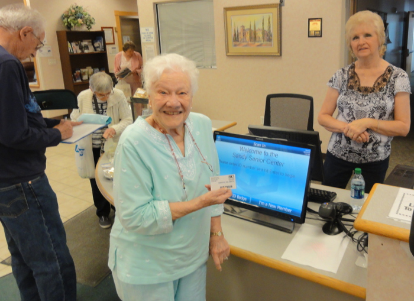
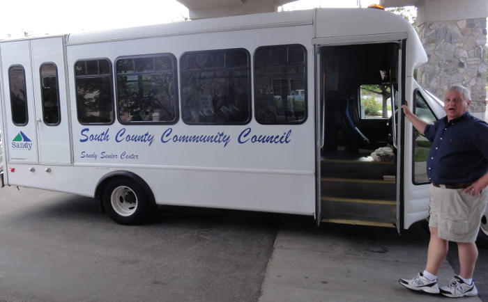
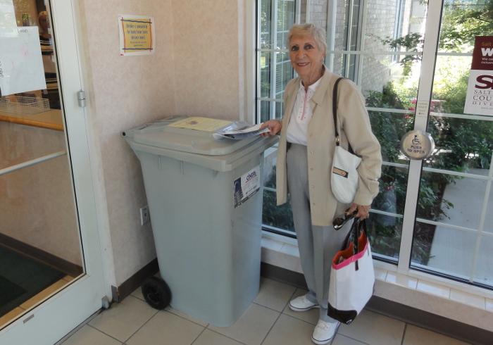

Welcome to Sandy Senior Center. We hope your experience at our Center is educational, enjoyable and a place to make new friends. If you have ideas that will improve our Center, please feel free to stop by my office. I want everyone to feel welcome. The Center is a great place!
If you have not tried our lunches, we would like to encourage you to do so. We try to provide a healthy, tasty meal daily.
Also, if you are interested in volunteering at the Center let us know. Volunteers are what make this Center work. We are grateful to our outstanding volunteers for their commitment to fellow seniors.
The Sandy Center offers a comprehensive range of advancement programs to enlighten, educate and enrich the lives of mature adults who want a broad spectrum of life experiences.
Programs include classes, lectures, forums, seminars and services to maintain the body, mind and vital aging.
All members throughout Salt Lake County Senior Centers are asked to follow a Standard of Conduct to ensure a safe, healthy and pleasant environment for everyone. A copy is available at the reception desk.
Every time you use the facility, you are asked to scan your card at the reception desk. Scanning is important — this is how we track participation and receive funding for programs and activities. We report the number of participants monthly to Salt Lake County.
NOTE: You can always present your Sandy Senior Center card if you go to another County Center to avoid being required to fill out another Data Intake form. Your assigned membership number is the same for all County Centers and other Aging Services Programs.
For those adults age 60 and up, living in Sandy City or White City who do not have access to an automobile, the Sandy Parks and Recreation Department provides transportation Monday through Friday.
Pick-up begins at 7:30 a.m. from your residence.
You will be leaving the Center at 1:00 p.m. for your return trip home.
For more information, call Scott directly 801-230-5673.
There are some areas in the City that are inaccessible to the bus due to narrow lanes or difficult driveways. Each request for transportation is evaluated and the decision is based on accessibility and safety conditions. A call to Scott will clarify any transportation issues. All van participants are required to wear seat belts. Whenever road conditions are unsafe, the morning pickup time will be delayed or canceled. The driver will call those on the transportation pickup list to advise them of the changes. If a major storm drops 7” to 12” of snow, transportation will be canceled and, in most cases, the Center will be closed as well. It is the responsibility of the transportation driver and Center staff to keep seniors as safe as possible.
A lost and found area is located at the reception desk. If you find items, please turn them in to a receptionist. Items left unclaimed after several months will be displayed for a week. Unclaimed items will be sold in the Trinkets and Treasures Thrift Shoppe.
The Sandy Center was built in 1997 using Housing and Urban Development funding. HUD regulations prohibit the Center from being rented out for public use. However, the City and/or Center Staff may consider any activities that are sponsored by the seniors and have at least 80 percent attendance over the age of 60. These special activities are held during the afternoon and on Thursday evenings during normal open hours.
In order to help protect your identity and keep documents with personal information from falling into the wrong hands, the Center provides access to a professional, secure document shredding service.
At the entrance to the Center is a large locked shredder container. Any documents placed in the shredder container will be securely destroyed.
We are very proud of our beautiful building. One of the most difficult tasks for our janitorial staff is dealing with spills on the carpets and furniture.
Therefore, we ask that you put lids on drinks when moving around the Center. If a spill does occur, please notify the staff immediately so that cleaning can be accomplished as quickly as possible.
There are many expensive and hard-to-replace pieces of equipment located throughout the building. These include the commercial exercise machines, quilting frames, computers, billiard tables, scanners, decorations, sound system, televisions, VCR’s, Wii equipment, pottery wheels, ping pong tables, stained glass equipment, whiteboards, paintings, tables, chairs, etc. We encourage members to treat these items the same as you would in your own home. If you notice someone is abusing his or her privileges, please notify a staff member.
The copy machine is available to all instructors for classroom materials. If individuals wish to copy any other materials, there is a 10-cent cost for an 8.5 x 11 sheet or 20 cents for an 11 x 17 sheet. Salt Lake County Aging Service Centers Program purchases all the paper used at the Center. This money is returned to Salt Lake County. Please request a staff member to make copies for you.
There are many things to do each day at the Center. In order to provide the best service possible, the staff provides a description of activities and a registration sheet for most activities. The sheets are located across from the meal aide desk on the way into Centre Café. To participate in an activity, it is helpful if you write your name and phone number down on the sheet so that the instructor/leader knows how many individuals to plan for. The leader or a receptionist can call to remind you as well. As you browse the Information/Program Corner, also note the pictures on the bulletin board that describe other programs at the Center.
The purpose of the lock down/lock out plan is to provide protection to employees and/or patrons at the Center if a situation arises involving an active shooter, dangerous intruder(s), or any other incident(s) that may result in harm to persons inside or outside the building.
When it’s time to lock down:
Emergency situations are inherently chaotic; the best protection in such a situation is preparation. Staff will periodically review their options and plans and at least twice per year hold drills to rehearse emergency procedures. For such drills, emergency scenarios will vary from time to time in order to provide various possible response options in the event of an actual emergency.